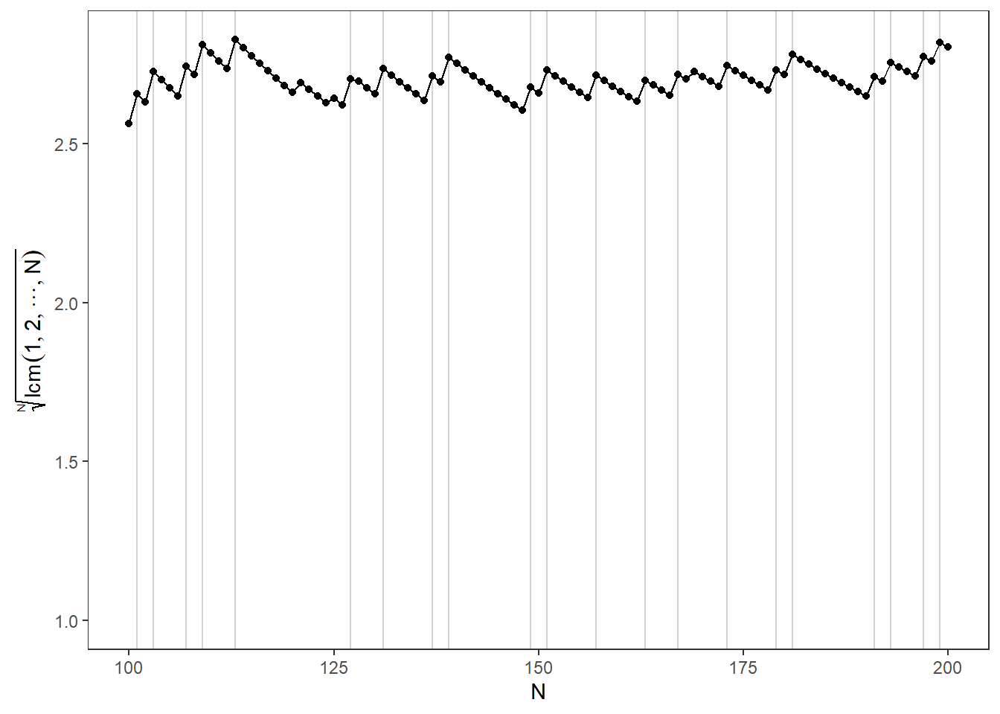

The N:th root of the least common multiple of an integer vector from 1 to N approaches the Euler’s number when N approaches infinity1:
\[\lim_{N \to \infty} \sqrt[N]{lcm(1,2,...,N)} = e\]
I wanted to write R code to visualize this result:
library(VeryLargeIntegers)
library(tidyverse)
library(data.table)
library(latex2exp)
library(Rmpfr)
N <- 500
nth_root_lcm_1_to_n <- function(N) {
# Use Reduce() to calculate the least common multiple of 1 through N
a <- Reduce(lcmul, 1:N)
# Use mpfr() to convert a to an arbitrary precision number
a <- as.character(a)
precision <- ifelse(str_length(a) >= 200, str_length(a), 100)
a <- mpfr(a, precBits = precision)
# Use mpfr() to calculate the Nth root of a with the desired precision
return(a ^ (1/N) %>% as.double())
}
data <- data.table(n = as.double(1:N)) %>%
.[, i := ifelse(n %in% 1:2, n, nth_root_lcm_1_to_n(n)), n]
data %>%
ggplot(aes(x = n, y = i)) +
xlab("N") +
geom_point() +
geom_line() +
ylab(TeX("$\\sqrt[N]{lcm(1,2,...,N)}$")) +
theme_bw() +
xlim(c(0, 500))What’s interesting is that, the convergence is not “smooth”, i.e., there are “jumps” in the value of the function. Obviously, at these “jumps” the value of the LCM changes. See, e.g., here:
data %>%
ggplot(aes(x = n, y = i)) +
xlab("N") +
geom_point() +
geom_line() +
ylab(TeX("$\\sqrt[N]{lcm(1,2,...,N)}$")) +
theme_bw() +
xlim(c(0, 500)) +
xlim(c(100, 200)) +
theme(panel.grid = element_blank())Clearly, the LCM changes when \(N\) is a prime. Let’s plot the point’s where \(N\) is a prime:
# Find all primes less than or equal to N
primes <- primes(N, bar = F) %>% as.integer()
data %>%
ggplot(aes(x = n, y = i)) +
xlab("N") +
geom_vline(xintercept = primes, color = "lightgrey") +
geom_point() +
geom_line() +
ylab(TeX("$\\sqrt[N]{lcm(1,2,...,N)}$")) +
theme_bw() +
xlim(c(0, 500)) +
xlim(c(100, 200)) +
theme(panel.grid = element_blank())
There still remains some “jumps”. These jumps are powers of primes:
# Calculate how large powers to calculate
log(N, 2)## [1] 8.965784data %>%
ggplot(aes(x = n, y = i)) +
xlab("N") +
geom_vline(xintercept = primes, color = "lightgrey") +
geom_vline(xintercept = c(primes^2, primes^3, primes^4,primes^5,primes^6, primes^7, primes^8), color = "pink") +
geom_point() +
geom_line() +
ylab(TeX("$\\sqrt[N]{lcm(1,2,...,N)}$")) +
theme_bw() +
xlim(c(0, 500)) +
xlim(c(0, 500)) +
theme(panel.grid = element_blank())You can find a detailed proof from Daniel Fischer’s answer to this question: https://math.stackexchange.com/questions/834220/least-common-multiple-lim-sqrtn1-2-dotsc-n-e.↩︎